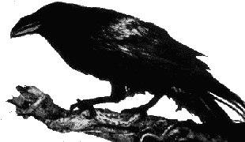

twilight corner in the herm1t's cave
My blog in russian (@ lj.rossia.org) and english (@ blogger) Works
Runtime GOT poisoning from injected shared object
The right way to hook PR_Write f-n in FireFox
CVE-2010-4347 CVE-2012-0056 small fixes
Quine-based infector for MySQL, DarK-CodeZ #5
10 PRINT, i came second with 11 bytes
i also thought about undocumented instructions, but failed to found the right one, my congrats to Peter
Mixing 16- 32- and 64-bits code
Recompiling the metamorphism, Valhalla #2
LDE based on exceptions
Hardware breakpoints
Getting GLibc address from TLS
Advanced EPO: Deeper, longer and harder (Part 1), EOF#3
Entropy in integers
Writing to executable (and currently running) file
Inversing a random numbers, in Virus Writing Bulletin #1, update from cl0ne
Using rpmlib in RELx.G2, handling relocations in .data
RiPM - update MD5 checksum and length of the file in the RPM database
My topics on forum: Reversing PRNGs, Not so random random()
From position-independent to self-relocatable viral code [RU] [EN], sources and examples of Linux.RELx.A/G2
.. P. Ferrie «Frankie say relax», VB, Aug 2011, pp. 4-6
Examples of different infection methods for Linux
..hash remove/reduce (sysv style only), cavity (data, functions, headers, sections, relocks),
simple (compression, overlay, prepender), plt, segments (add, end of bss, end of data, padding, replace, shift text)
Linux.FortyTwo (crc32b SSE4.2), download source and binary, or read the description
.. P. Ferrie «Life, the Universe, and Everything» (local copy)
YAD (Ядъ) Yet Another Disassembler [Download] (also in EOF-DR-RRLF)
Linux.Lacrimae, README EN,RU, download v. 0.30, released in EOF-DR-RRLF
.. P. Ferrie "Crimea River", VB, Feb 2008, or the local copy here at vx heavens
up to 0.25.2 detected as Linux/Crimea, and a few samples as Virus.Linux.Impok
INT 0x80? No, thank you! [EN], Linux.PiLoT, download source and binary, released in EOF-DR-RRLF
there was a typo in the source, the last line in the pilot.asm should be
pcnt equ data_start + 24detected as ELF/Pildug, Virus.Linux.Piltot
.. P. Ferrie "Flying solo", VB, Sep, 2009, or the local copy here at vx heavens
Reverse of a coin: A short note on segment alignment [EN], Linux.Coin download source and binary
.. P. Ferrie "Heads or tails?", VB, Sep 2009, or the local copy here
Caveat virus [EN], Linux.Caveat download source and binary
.. P. Ferrie "Can you spare a seg?", VB, Jul 2009, or the local copy here
.. patch for the virus which introduces more rigid checks of ELF header fields..
Hashin' the elves [EN/RU], demo viruses Linux.Hasher.a,b,c,d (aka Linux.HashCave, ELF/Small)
.. P. Ferrie "Making a hash of things", VB, Aug 2009, or the local copy here
Snippets: Using ELF imports, using sysenter, infecting ELF files (before text, after data/bss, last seg, padding, replace)
Tribute to PDP-11/UNIX, UNIX.Dawn virus (aka UNIX.Small.a)
Infecting ELF-files using function padding for Linux [EN/RU], Linux.Arches inside
.. cited in Matthieu Kaczmarek "ELF et virologie informatique"
RC4, RC5, TEA implementation
Arithmetic, LZW and RLE compression modules and demonstration virus Linux.Arian, also released in RRLF#7
The virus that is always with me... Linux.Beads.89
Yet Another Six Bytes: AC CD 29 E2 FB C3
FreeBSD.Egalite (Linux.Hermalite) [binary] and [source], also released in RRLF#7
Linux.Grip (rel.2) (some variants detected as Virus.Linux.Grip.b, Virus.Linux.Little [source, released in RRLF#6] [binary]
Linux.Grip (rel.1) ( Virus.Linux.Grip.a) [binary, released in su.virus] [source]
..i found a typo in rel. 2 sources, so there is the patch to fix it, unpack sources and run: patch -p0 < Linux.Grip-typo.patch
..it is no wonder that single virus produced two families, though even a simple tool will find similarities (ps, 67K), raw data (bz2, 280k) (Feb 2005)..
..having a lots of options, the tempting and natural idea is to turn the virus into generator (ezXML,GTK2; zip, 44k) sceenshot (Sep 2005)..
..this virus attracted some attention from the avers: K. Sapronov 2005: *nix Malware Evolution, J. Kaminsky Loathing Lupper in Linux
BrainFuck interpreter, Brainfuck to C converter (sed)
Archive of herm1t's LJ
Geoffrey James "The Tao of Programming" (russian translation)
The crack for the IgorPlug USB
Simple client for the Nagios: nagv-0.91 and RPM package.
Kernel module called kMeep-Meeper will "pronounce Linux as Le-ee-n-oo-oks"
every time any process dies, based on UR3IJC's idea and splicing code by Silvio Cesare
AX.25 over IP encapsulation driver for Linux, see RFC 1226 for details
This will help to extract files from the Web Compiler presentations (like VDAT)
K&R malloc/free implementation
Small LISP-like interpreter based on slisp-1.2 by Sandro Sigala
Two quines written in LISP and SH and BASH.-$0
Quick approach to display MRTG graph in text console.
Some code for 18F252, without comments and schematics it's mostly of no use.
..forgot, there's picup (a Linux uploader) for Tiny PIC bootloader, tested and used with the tinybld163..
Slightly optimized version of Catchy32 engine by sars
Brain damaged games with gcc and ELF. Linux.CSmall.395/410
Linux.Futhork .a, .b, thread on comp.lang.lisp
Linux.ThinIce, Linux.Adhoc.b, Linux.Tahorg
Interviews
Perforin "Interview with herm1t", Dark Codez #3, Dec 2010
 Alexey Vorobyev «The nature of the pathogen», Esquire Russia, #33, May 2008 (interview with me inside)
Alexey Vorobyev «The nature of the pathogen», Esquire Russia, #33, May 2008 (interview with me inside)
izee "Interview with herm1t" for EOF-DR-RRLF magazine, Nov 2007
Dan Grabham Warning: Virus!, .net Issue 118, Dec 2003 (I answered a few questions there)
Misc
A talk with Nancy Kress about copyvio and shit like that
Ferrie's post on EOF magzine, and another one on RRLF/DR

Links
Forums of VX Heavens and EOF project,
Homepage of Peter Ferrie
Some of my sites:
о книгах,
о журналах,
генераторах,
статьях,
о всяком полезном софте.
Архивы FIDO конференций
su.virus,
adinf.support,
ru.virus,
su.cm,
unix-virus,
pvt.virii.


{kind=link}
{kind=link}